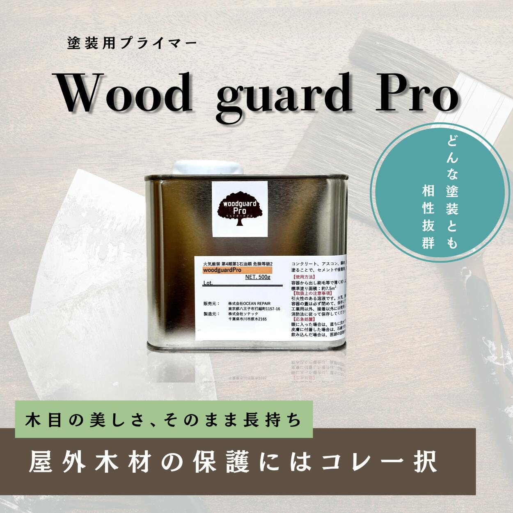
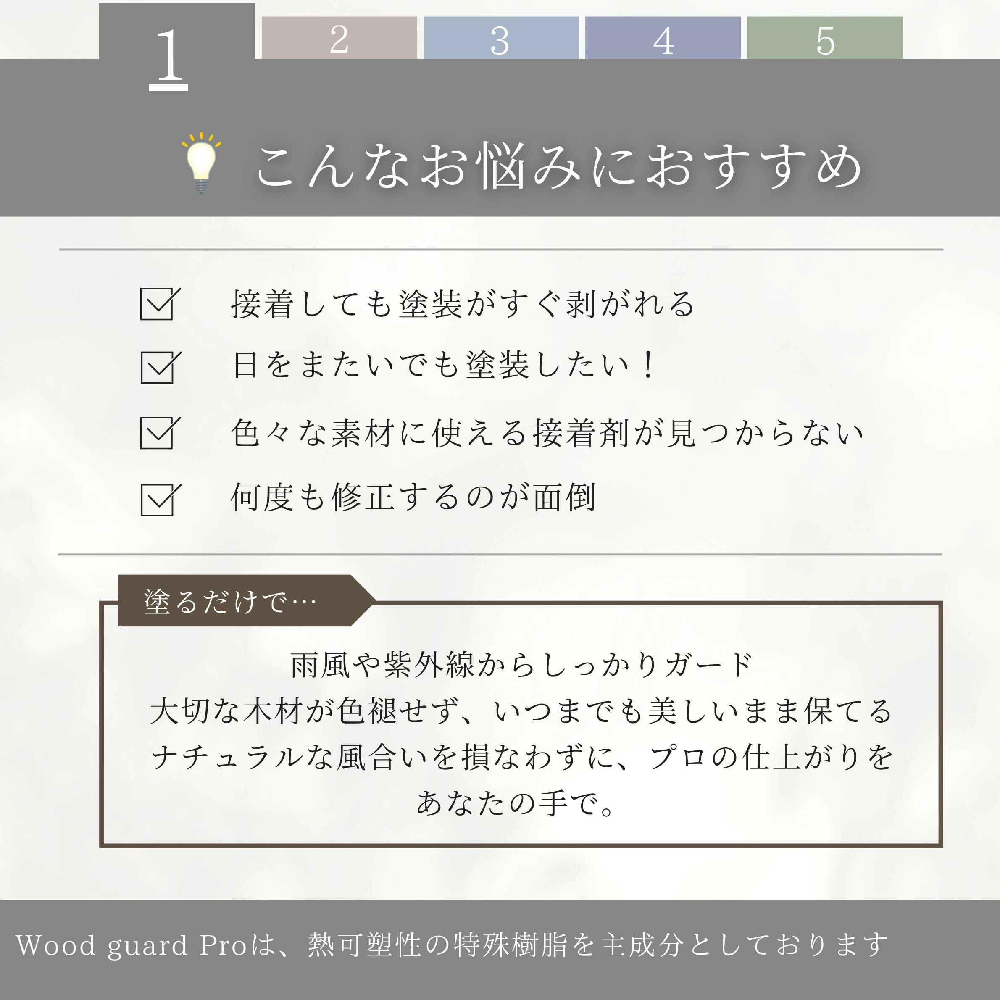
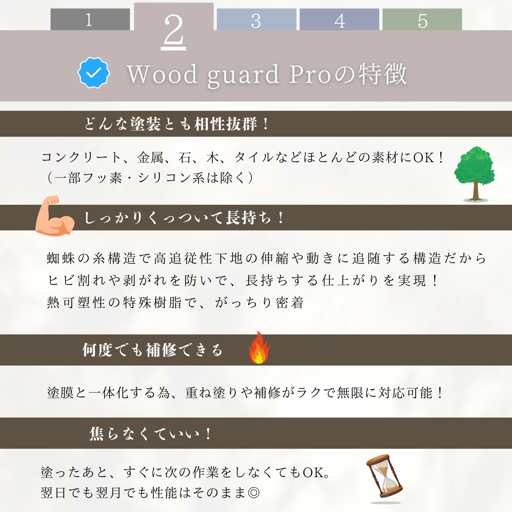
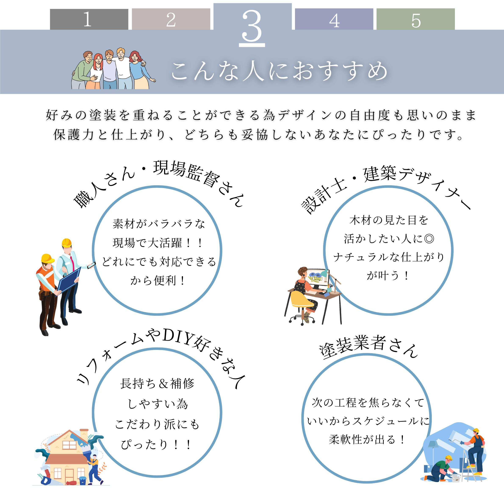
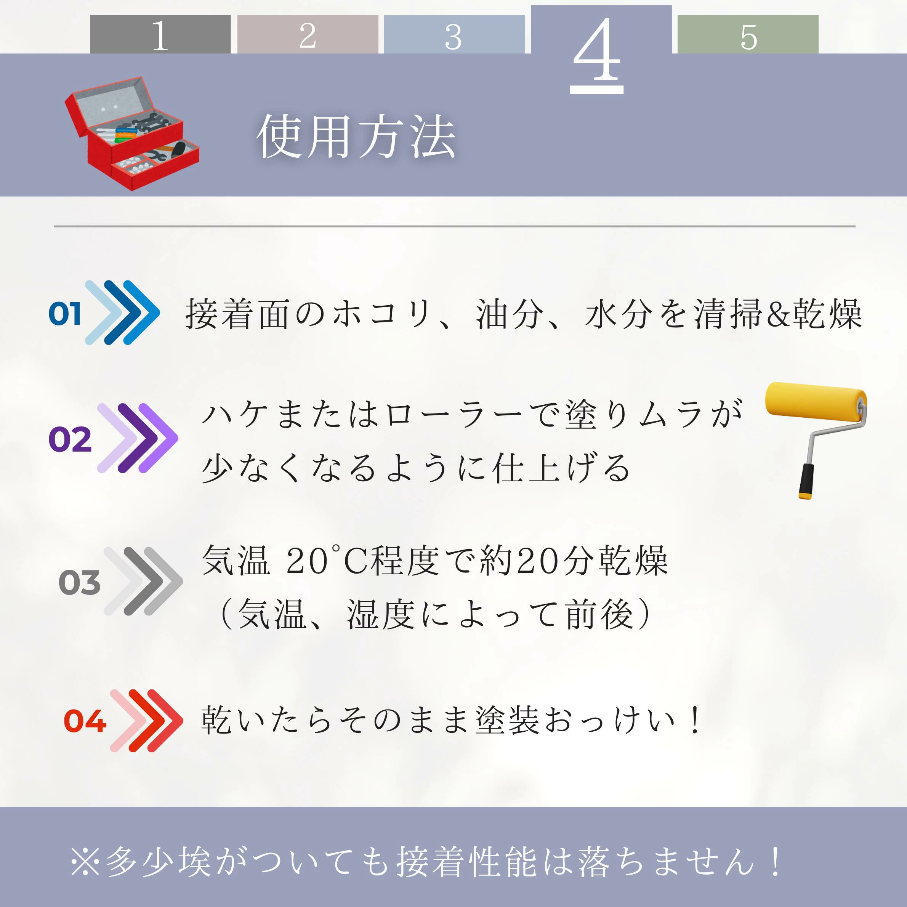

WoodguardProは、コンクリート・金属・石材・木材・タイルなど、 様々な素材に強力な密着性を発揮する 新発想の塗装用密着プライマーです。
熱可塑性ゴム系樹脂を主成分とし、 下地の伸縮に追随する柔軟な塗膜構造を持つことで、 塗装の剥がれやひび割れを防ぎます。
木材の自然な風合いを保ちながら、 防水・防蝕・紫外線対策を同時に実現します。
※乾燥後、多少の埃や湿気が付着しても接着性能に影響はありません。





株式会社 OCEAN REPAIR
東京都八王子市打越町1157-16
E-mail: oceanrepair@e-mail.jp
☎ 042-636-7360